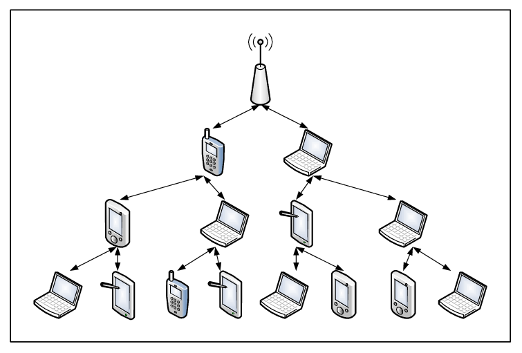

Network Architecture
Network architecture describe how a network is arranged and how resources are coordinated and shared. It encompasses a variety of different network specifics, including network topologies and strategies. Network topology describes the physical arrangement of the network. Network strategies define how information and resources are shared.
Topologies
A network can be arranged or configured in several different ways. This arrangement is called the network's topology. The most common topologies are:
● Bus network : Each device is connected to a common cable called a bus or backbone, and all communications travel along this bus.
● Ring network : Each device is connected to two other devices, forming a ring, see Figure 8-14. When a message is sent, it is passed around the ring until it reaches the intended destination.
● Star network : Device is connected directly to a central network switch, see Figure 8-15. Whenever a node sends a message, it is routed to the switch, which then passes the message along to the intended recipient. The star network is the most widely used network topology today. It is applied to a broad range of applications from small networks is the home to very large networks in major corporations.
● Tree network : Each device is connected to a central node, either directly or through one or more other devices. The central node is connected to two or more subcordinate nodes that in turn are connected to other subordinate node, and so forth, forming a treelike structure, see Figure 8-16. This network, also known as a hierarchical network, is often used to share corporatewide data.
● Mesh network : This topology is the newest type and does not use a specific physical layout (such as a star or a tree). Rather, the mesh network requires that each node have more than one connection to the other nodes, see Figure 8-17. The resulting pattern forms the appearance of a mesh. If a path between two nodes is somehow disrupted, data can be automatically rerouted using another path. Wireless technologies are frequently used to build mesh networks.

Figure 8-14 Ring Network

8-15 Star Network
Strategies
Every network has a strategy, or a way of coordinating the sharing of information and resources. Two of the most common network strategies are client/server and peer-to-peer. Client/server networks use central servers to coordinate and supply services to other nodes on the network. The server provides access to resources such as web pages, databases, application software, and hardware, see Figure 8-18. This strategy is based on specialisation. Server nodes coordinate and supply specialised services, and client nodes request the services. Commonly used server operating systems are Windows Server, Mac OS X Server, Linux, and Solaris. Client/server networks are widely used on the Internet. For example, each time you open a web browser, your computer (the client) sends out a request for a specific web page. This request is routed over the Internet to a server. This server locates and sends the requested material back to your computer. One advantage of the client/server network strategy is the ability to handle very large networks efficiently. Another advantage is the availability of powerful network management software to monitor and control network activities. The major disadvantages are the cost of installation and maintenance. In a peer-to-peer (P2P) network, nodes have equal authority and can act as both clients and servers. The most common way to share games, movies, and music over the Internet is to use P2P network. For example, special file-sharing such as BitTorrent can be used to obtain files located on another personal computer and also can provide files to other personal computers. P2P networks are rapidly growing in popularity as people continue to share information with others around the world. The primary advantage is that they are easy and inexpensive (often free) to set up and use. One disadvantage of P2P networks is the lack of security controls or other common management functions. For this reason, few businesses use this type of network to communicate sensitive information.